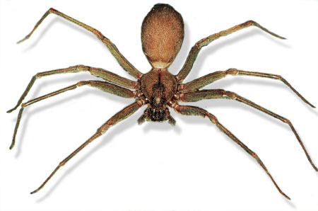
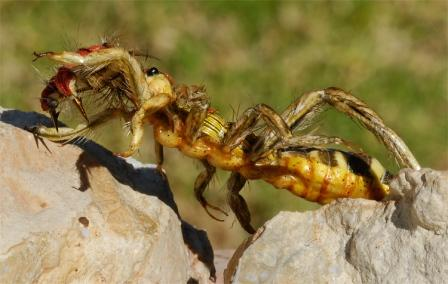
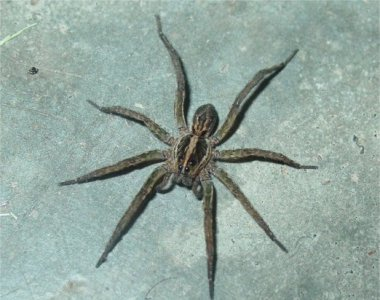
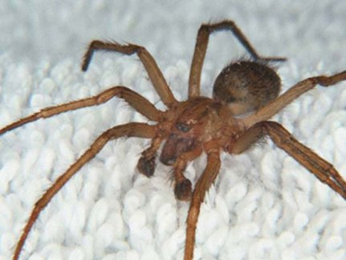
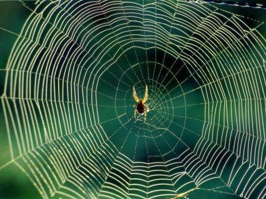

violinista

La araña violinista o del rincon es otro nombre común de la araña reclusa parda. Ellas son bien conocidas por su aspecto y diseño, como el dibujo de un violín. También tienen ocho pares de ojos, lo que es interesante teniendo en cuenta que otras sólo tienen seis pares de ojos.
Araña Camello

Puede haber oído acerca de las arañas llamadas Arañas Sol o el escorpión del viento. Sin embargo, tienen un nombre verdadero, es la Araña Camello. El debate continúa entre los expertos acerca de ello. ¿Son realmente arañas o escorpiones? Por ahora se quedará entre los tipos de arañas, pero la investigación futura podría hacer que se movieran de clasificación.
arañas lobo

Las arañas lobo son muy ágiles y se mueven rápidamente. Son activas y tienen apariencia muscular. Como todas las arañas tienden a vivir bien en los alrededores. Su nombre viene del hecho de que su cara luce como un lobo cuando se ve de cerca.
La Araña Hobo

La Araña Hobo se considera por ser muy agresiva en la naturaleza. Se adaptan a vivir en muchos lugares. Muchas personas le temen a esta araña debido a las historias que surgen y a que siguen tomando fuerza en las montañas. Se clasifican a la altura de las arañas viuda negra y araña violinista o del rincón entre las arañas mas peligrosas y venenosas.
Viuda Negra

La Araña Viuda Negra tiene una reputación de ser una de las arañas más peligrosas del mundo. Esto es porque tienen glándulas de veneno muy grandes. Cuando muerden, es una hembra la mayoría de las veces. Los machos casi nunca muerden a los humanos, pero se ha sabido que ocurre de vez en cuando.
araña seda

La araña seda de oro también se conoce como la araña bananera o la araña gigante de la madera. Crean seda de color oro muy diferente a la de otros tipos de arañas. De ahí proviene su nombre. Esto puede ser beneficioso pues hace que sus redes sean más atractivas. Ellas se ven agresivas, pero no hay evidencia real para sugerir que es verdad.